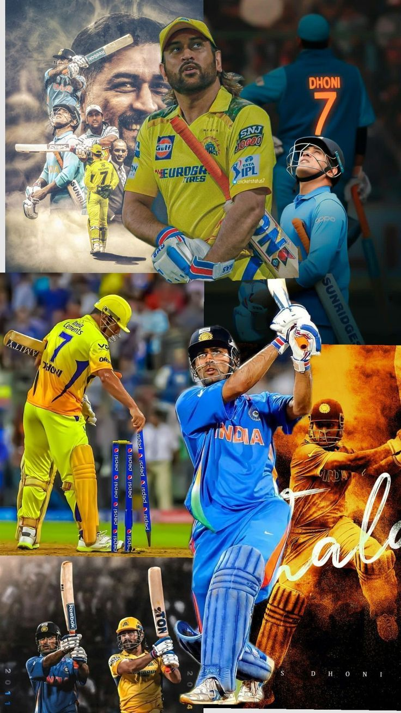
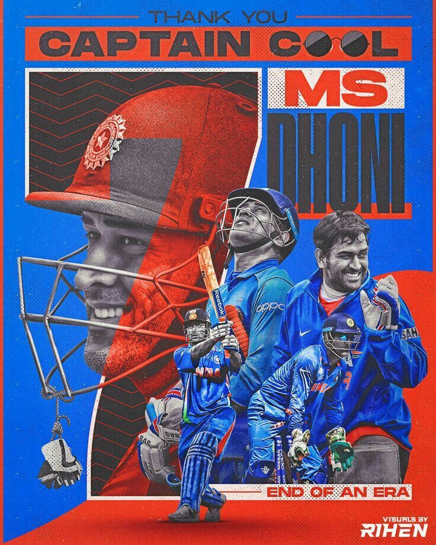
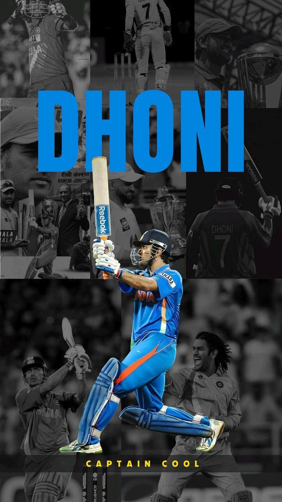
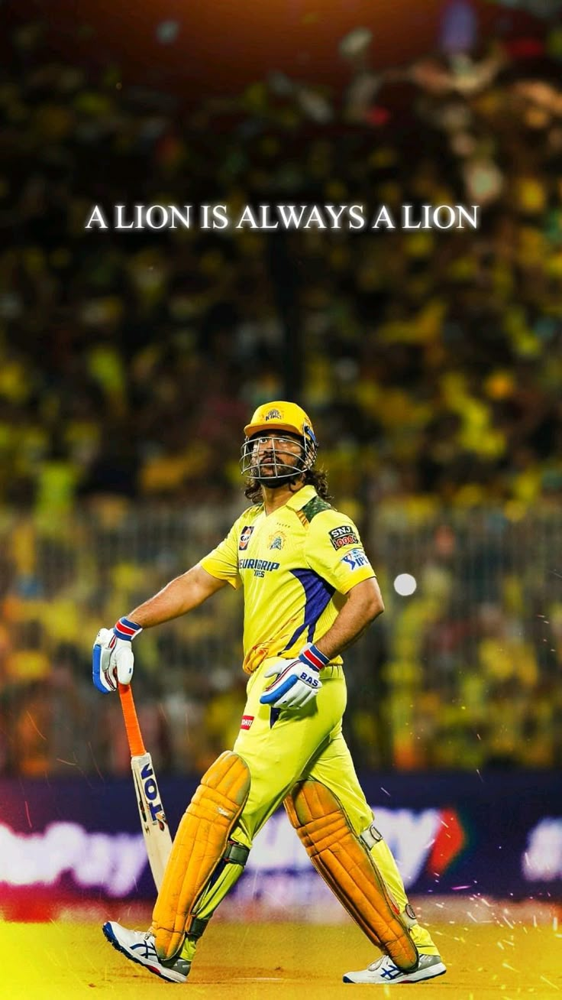
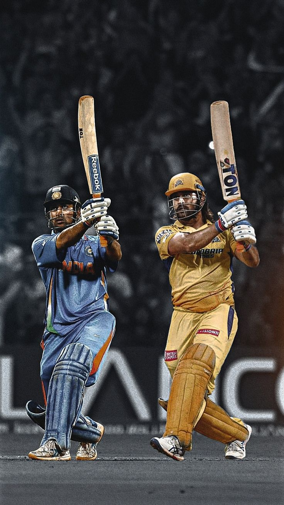

"For me, the opposition is just another opposition," and "The process is more important than the results." He also emphasized the importance of hard work, saying, "Hard work always pays off; there are no shortcuts to success."





MS Dhoni, born in Ranchi, is a legendary Indian cricketer and former captain, renowned for his exceptional wicket-keeping and finishing skills, as well as his calm and strategic leadership. He led India to victory in the 2011 Cricket World Cup, the 2007 ICC World Twenty20, and the 2013 ICC Champions Trophy. Dhoni also captained the Chennai Super Kings to five IPL titles and two Champions League Twenty20 titles.
Here's a more detailed look at his journey:
Early Life and Career:
Dhoni's early passion for cricket, combined with his goalkeeping skills from football, helped him excel as a wicket-keeper.
He made his first-class debut for Bihar in 1999 and gradually rose through the ranks.
His performances in the India A team tour to Zimbabwe and Kenya, where he scored two centuries, brought him to the attention of selectors.
International Debut and Captaincy:
Dhoni made his ODI debut in 2004 against Bangladesh and his Test debut a year later against Sri Lanka.
He took over the ODI captaincy in 2007 and led India to victory in the inaugural ICC World Twenty20 the same year.
In 2008, he became the captain in all formats and led India to the top of the ICC Test rankings in December 2009.
World Cup Glory and Beyond:
Dhoni's captaincy culminated in the 2011 Cricket World Cup victory, where he famously finished the match with a six.
He also led India to victory in the 2013 ICC Champions Trophy.
Dhoni retired from Test cricket in 2014 but continued playing limited-overs cricket until 2019.
Captaincy Records:
He is the only captain to win all three ICC white-ball trophies (World Cup, World T20, and Champions Trophy).
Dhoni holds the record for the most international matches as captain.
He led Chennai Super Kings to five IPL titles and two Champions League T20 titles.
Beyond Cricket:
Dhoni is known for his calm demeanor and strategic brilliance on the field.
He has received numerous awards, including the Padma Bhushan and the ICC ODI Player of the Year.
He has inspired a generation of cricketers and is considered one of India's greatest captains.
.jpeg)
.jpeg)